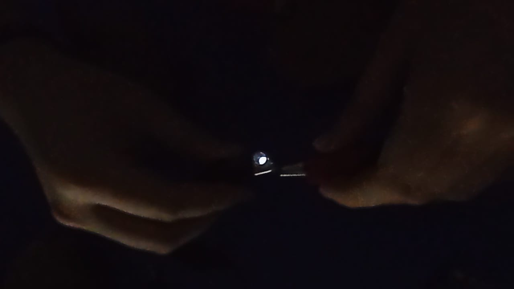
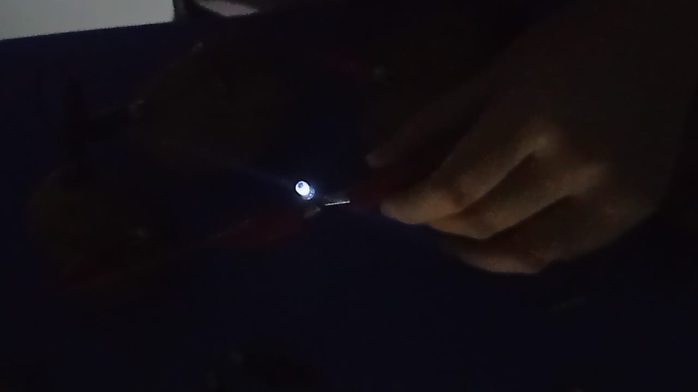
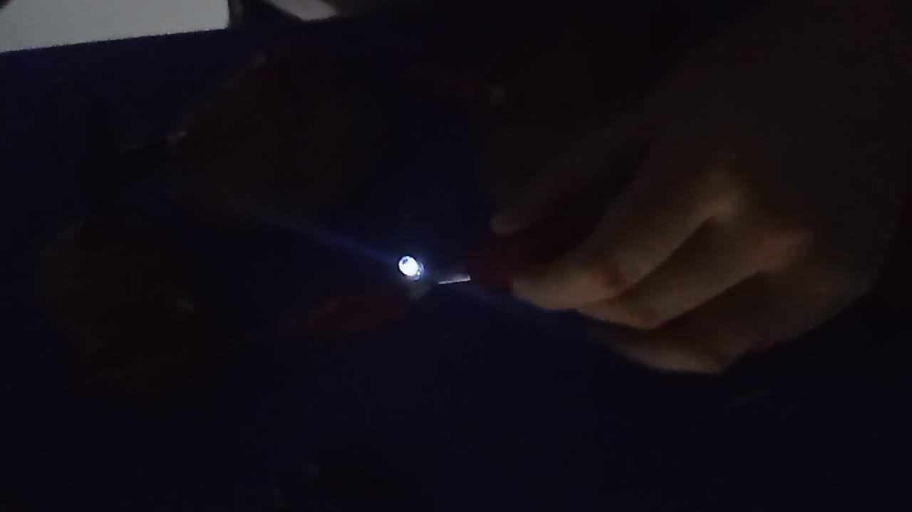
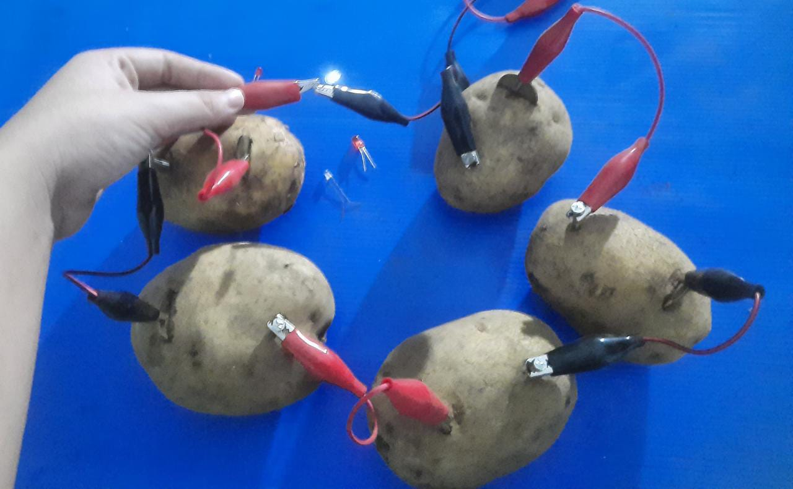
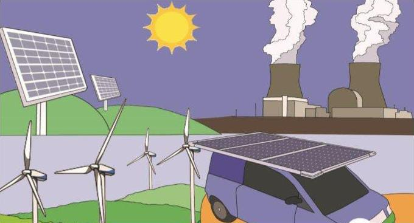

Judul Praktikum : Energi Alternatif Pada Kentang
Mata Pelajaran : Fisika, Biologi, Kimia, Matematika, Coding
Hari/Tanggal : Kamis / 10 Februari 2022
Waktu : 08.00 - 12.30 WIB
Tujuan Percobaan : Mengidentifikasi energi listrik alternatif
Alat dan Bahan : 1. Kentang
2. Paku
3. Kabel
4. Penjepit buaya
5. Koin 500 kuning
Langkah-langkah :
1. Siapkan kentang dan lempengan tembaga.
2. Tusukkan lempengan tembaga dan seng ke dalam kentang mentah.
3. Jepitkan kabel kepada lempengan tersebut dan hubungkan dengan lampu.
4. Lihat nyala lampu yang terjadi.
5. Jika nyala lampu belum kelihatan, maka tambah kentang tersebut agar arus listrik yang dihasilkan bertambah.
HASIL PERCOBAAN

(Percobaan 3 kentang, lampu redup)

(Percobaan 4 kentang, lampu cukup terang)

(Percobaan 5 kentang, lampu terang)

(Percobaan 5 kentang)
PEMBAHASAN Definisi energi alternatif :
Energi alternatif adalah istilah yang merujuk kepada semua sumber energi yang dapat digunakan yang bertujuan untuk menggantikan bahan bakar konvensional tanpa akibat yang tidak diharapkan dari hal tersebut.

Jelaskan mengapa lampu bisa menyala / tidak menyala berdasarkan percobaan dan apa kesimpulan dari percobaan tersebut !
Setelah dilakukan percobaan, lampu LED menyala setelah dihubungkan dengan 3-5 kentang. Pada percobaan 3 sampai 5 kentang, lampu LED menyala, sedangkan pada 1 dan 2 kentang, lampu LED tidak menyala. Hal itu disebabkan oleh kuat arus kentang yang terlalu kecil sehingga tidak cukup untuk menyalakan lampu LED. Nyala lampu yang dihasilkan oleh 5 kentang lebih terang dibanding dengan 3 kentang. Nyala-nya lampu LED dari kentang disebabkan oleh getah kentang yang dapat menghasilkan arus listrik dan juga karena terdapat kandungan garam dan air pada kentang yang dapat berfungsi sebagai larutan elektrolit. Sehingga, semakin banyak kentang yang digunakan, maka akan semakin besar pula nyala lampu yang akan dihasilkan. Dalam percobaan ini dapat disimpulkan bahwa kentang dapat digunakan sebagai energi alternatif.